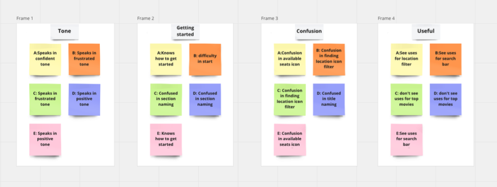

Movie Ticket Booking App | Google UX Certification Project
In today's fast-paced world, people lead hectic lives and have limited time to spend on leisure activities. Movie-going is one of the most popular forms of entertainment, but buying movie tickets can be a time-consuming and frustrating process. Many moviegoers often have to stand in long queues at the cinema, leading to a frustrating and unpleasant experience. Moreover, buying tickets in advance can be inconvenient as it requires users to physically visit the cinema or call the box office during working hours.
I have designed a solution that offers moviegoers a seamless and hassle-free experience by eliminating the need to stand in long queues or physically visit the cinema to buy tickets. Using data collected from users, the CineTicket application provides personalized movie recommendations based on their viewing history and preferences, making it easier for them to discover new movies and plan their movie-going experience.
Many movie lovers have specific preferences when it comes to the location and seat they choose while watching a movie. They also want to ensure that they are not wasting their time by watching a movie they may not enjoy. Therefore, I designed a solution that offers movie lovers an easy and quick way to filter theaters based on their location. I also provide notifications of new movie releases, so they can book early and enjoy the movie in their preferred location and seat. Additionally, users can check movie reviews and ratings to make informed decisions before booking their tickets.
To better understand the needs and preferences of our target users, I conducted user research using IDEO card sorting methods, including secondary research, interviews, and surveys. This approach helped us define our main target users and the key features that would be most valuable to them.
The persona defined is based on our interview and survey findings:
Based on these findings, I create three persona who are our target users
Taking the time to draft iterations of each screen of the app on paper ensured that the elements that made it to digital wireframes would be well-suited to address user pain points. For the home screen, I prioritized a quick and easy booking process to help users save time.
Using the completed set of digital wireframes, I created a low-fidelity prototype. The primary user flow I connected was building and selecting and scheduling, so the prototype could be used in a usability study.
After conducting user testing, I documented all user feedback and created an affinity diagram to analyze and group related points. The insights from the diagram helped me refine the design to better meet the users' needs. In this revision, I clarified that the user feedback was documented, and the purpose of the affinity diagram was to group related points. I also added that the insights from the diagram were used to refine the design to better meet the users' needs.
Based on my wireframe prototype, I conduct user testing with 8 participants. This time, I added more interaction and features into our final High-Fi Prototype.
After the class was end, I did not stop the project but continued to work the interface design, including contextual design, interactive prototype.
View the CineTicket's high-fidelity prototype